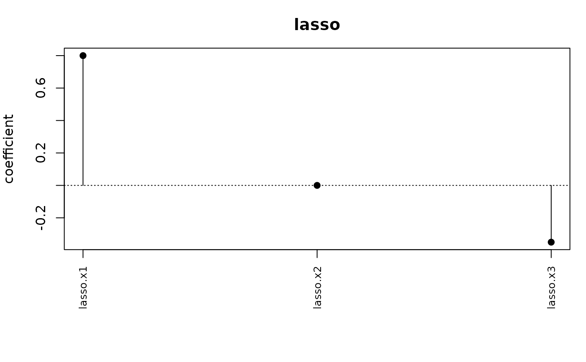
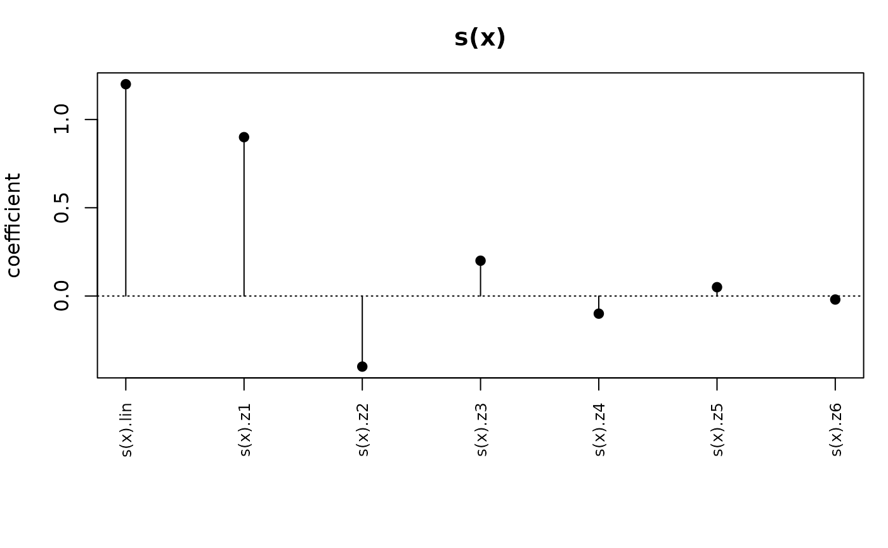

Draws the coefficients of a built additive term as a stem plot: one point per coefficient against its position in the block, a stem down to zero, a dotted line at zero, and the coefficient names rotated along the horizontal axis. It shows which coefficients a penalty has driven to zero and how large the survivors are, so it reads a lasso or a smooth at a glance.
The coefficients are supplied by the caller. A term holds a design block and
no fit, so there is nothing to display without them, and coef = NULL
throws.
Arguments
- x
A built additive term. An unbuilt one throws
"the term has not been built; call term_build(term, data) first.".- coef
The coefficients to draw, a numeric vector of length
term_npar(x). Required:NULLthrows"'coef' is required: a term is displayed at fitted coefficients.", and any other length throws with the required length named.- ...
Passed to
graphics::plot(), socol,ylim,cexand the rest of the usual graphical arguments work.xaxt,xlab,ylab,mainandpchare set here.
Details
The panel's title is the term's label when it has one, so "ridge" or
"s(x)", and the class name otherwise. The bottom margin is widened to
seven lines so that the coefficient names fit, and graphics::par() is
restored on exit.
The horizontal axis is the coefficient's position in the block, so the picture is of the block and not of the covariate. For a smooth, whose block is a Demmler-Reinsch reparametrization, the columns are ordered from least to most wiggly, and a penalized fit shows a decaying profile.
See also
term_coef_names() for the axis labels, edf() for what the same
coefficients cost in degrees of freedom.
Examples
set.seed(5)
d <- data.frame(x1 = rnorm(30), x2 = rnorm(30), x3 = rnorm(30))
b <- term_build(lasso(~ x1 + x2 + x3), d)
# Two survivors and one coefficient at exactly zero.
plot(b, coef = c(0.8, 0, -0.35))

# A smooth's block runs from least to most wiggly.
d2 <- data.frame(x = seq(0, 1, length.out = 60))
bs <- term_build(s(x, k = 8), d2)
plot(bs, coef = c(1.2, 0.9, -0.4, 0.2, -0.1, 0.05, -0.02))

# Coefficients are required, and must fit the block.
try(plot(b))
#> Error : 'coef' is required: a term is displayed at fitted coefficients.
try(plot(b, coef = 1))
#> Error : 'coef' must have length 3.